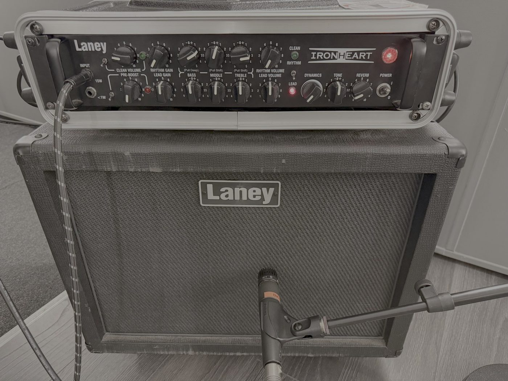

Perceptual Evaluation of Neural Audio Device Modeling
Evaluación perceptual del modelado neuronal de dispositivos de audio
¿Pueden los oyentes distinguir una captura neuronal del hardware que imita? Capturé un amplificador de guitarra, un ecualizador y un compresor con Neural Amp Modeler y comparé cada captura con su hardware en un estudio de escucha ABX con oyentes experimentados, usando pruebas de equivalencia y un modelo de efectos mixtos.

AmplificadorEquivalente
EcualizadorEn el límite
CompresorDistinguible
El error objetivo no predijo lo que se oye: la captura del ecualizador medía más cerca de su hardware que la del amplificador y, aun así, fue más fácil de detectar.
Artículo para revista en preparación con mis directores, Dr. Michael McLoughlin y Prof. Helena Daffern. Los resultados detallados son confidenciales hasta su publicación.
University of York, 2026 · Calificación: 78/100 (Distinction)